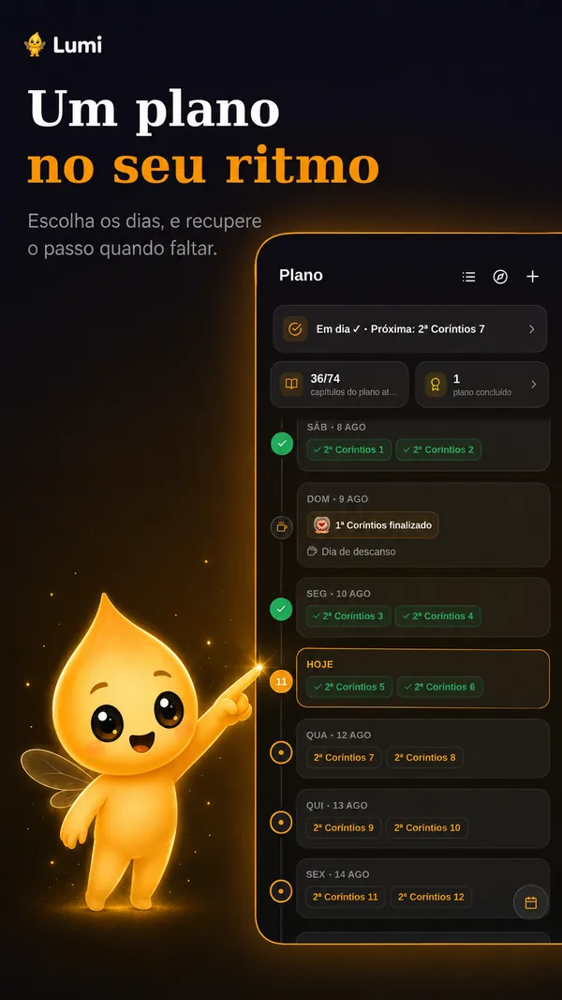
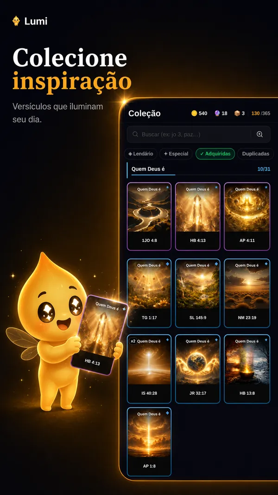
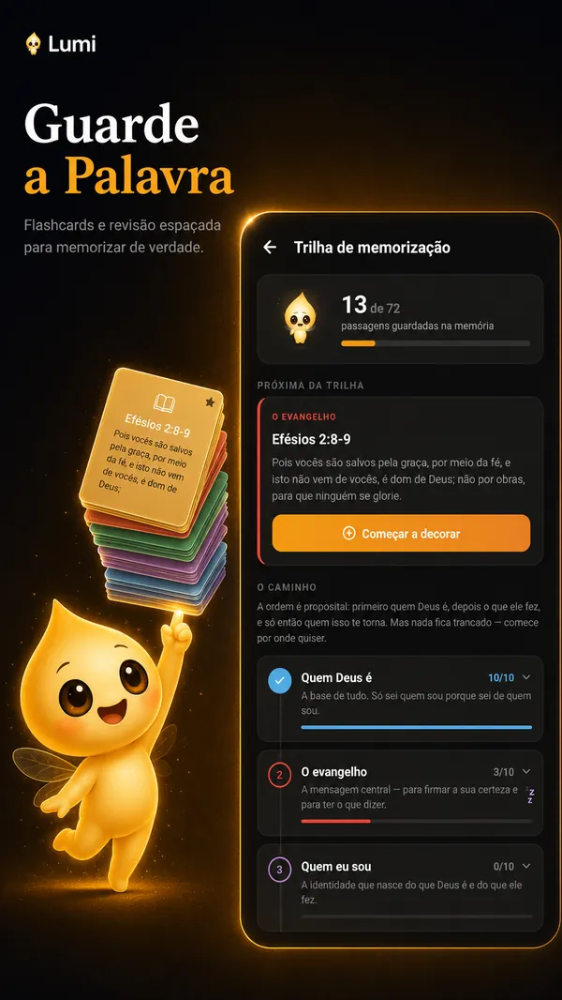
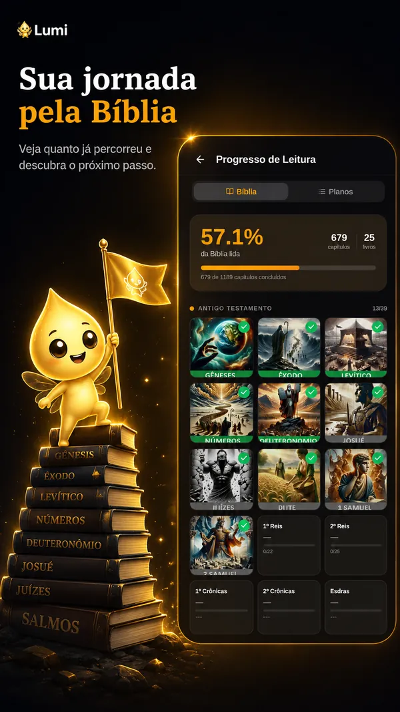

“Lâmpada para os meus pés é a tua palavra, e luz para o meu caminho.”Salmos 119:105
Chega ao Google Play em 1º de dezembro
Já está no Google Play
Até o lançamento, a gente mostra no Instagram, uma a uma, as luzes que o app traz.
Baixar no Google PlayGratuito para Android. Siga também @lumibiblia no Instagram.
Gratuito Funciona offline Sem anúncios
O que tem no app
Nove luzes para o seu caminho
Ler a Bíblia todo dia fica mais leve quando cada leitura acende alguma coisa.
-
O Lumi, que acende com você
Uma pequena criatura de luz que lê junto. Ele brilha mais a cada dia de leitura, comemora cada capítulo e, se você some, só perde o brilho. Nunca cobra.
-
Cartas para colecionar
366 cartas ilustradas de versículos, em 12 coleções, das comuns às lendárias. Leia, junte moedas e abra pacotes.
-
Quiz do que você leu
7.134 perguntas sobre os capítulos, em três níveis. Cada acerto rende moedas para a sua coleção.
-
Memorize de verdade
Monte o versículo tocando as palavras na ordem. A revisão espaçada lembra na hora certa, e decorar libera a carta especial.
-
Grife enquanto lê
Três canetas para destacar palavra por palavra ou o trecho inteiro, direto no texto.
-
Um plano no seu ritmo
Escolha ou crie o seu, marque dias de descanso e, se perder uns dias, recupere o ritmo sem começar do zero.
-
Ouça a Bíblia
Leitura em voz alta com controle de velocidade, e um modo carro de botões grandes para ouvir dirigindo.
-
Troque cartas com amigos
Mostre o código na sua tela, a outra pessoa lê com a câmera e as cartas trocam de mão.
-
Abra num instante
Diga “João 3” e o capítulo abre. Na tela inicial, widgets com o versículo do dia e as suas revisões.
Por dentro
Veja o Lumi em ação
Deslize para ver as telas do app.




O personagem
Quem é o Lumi
Uma pequena criatura de luz, mistura de vagalume, estrela e chama, que acompanha você dentro do app. A luz dele é a sua sequência de leitura: quanto mais dias, mais ele brilha.
Ficou uns dias sem ler? Ele não fica triste nem cobra: só perde o brilho, e acende de novo quando você volta. Hábito com companhia, não com culpa.
E ainda
-
Esboços de estudo
Tópicos e referências que abrem o texto com um toque.
-
Reflexões compartilhadas
Tudo nasce privado. Só vai para a comunidade se você quiser.
-
Versículo do dia
Para os dias corridos, com lembrete no horário que você escolher.
-
NVI, ACF e ARC
Três traduções, letra ajustável, modo claro e escuro.
-
Funciona sem internet
A Bíblia inteira fica no aparelho. O progresso sobe quando a conexão volta.
-
Seus dados são seus
Sem anúncios e sem rastreamento. Política de privacidade.
Falta pouco para acender
O Lumi chega ao Google Play em 1º de dezembro.
Seguir @lumibibliaComece sua jornada
Gratuito, sem anúncios e funciona offline.
Baixar no Google PlayDúvidas ou sugestões? Escreva para biblia.lumi@gmail.com.